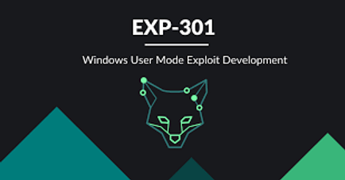
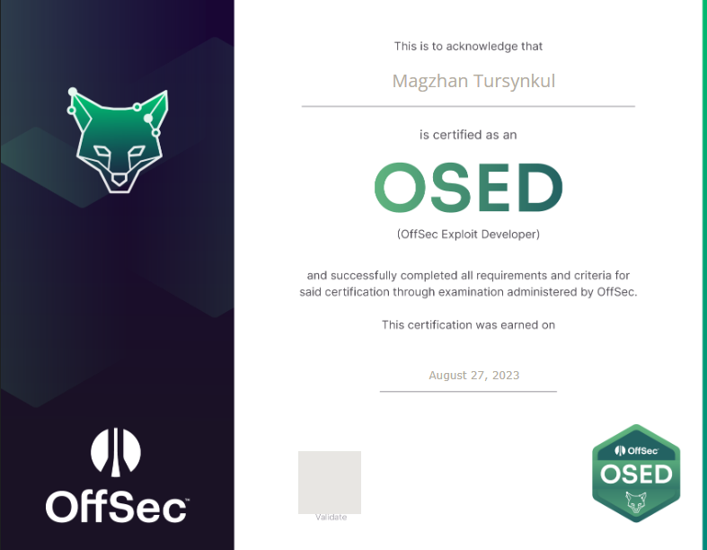

This course is AWESOME course. Yeah it is intermediate Windows User Mode Exploit Development course, but there are a lot of good stuff, which will be great fundamentall for Advanced Exploitation. I really enjoyed in Custom Shellcode, DEP, ASLR modules. Also, In this course you will use WinDBG, which is great debugger for user mode and kernel mode. You will know about how to write code in assembly, understand assembly instructions, bypass SEH, DEP, ASLR security mechanims and logical vulnerabilities such as leaking memory. Also, this course teches you how to create a custom ROP chains for bypassing DEP. You will have a lot of vulnerable binaries, which can help you in training and upgrading your reversing/exp dev skills.
I rescheduled 3 times my exam, because I had military cathedre and untill the middle of summer I can't pass the exam. So, last date of my exam was 27th August at 7.0 am. Before exam, I read book and watched all videos one more time. Then I spend a lot of time doing custom binaries from other students or in public github repos. There good ones such as signatus and quote_db from bmdyy. Also, xct has rainbow custom binaries for the training. About me, I also created RemoteApp binaries for reversing and exploit development traning. There are source codes, you can change something and create unique one for yourself :) You can see a fox as a totem of the course. The exam and course teaches you being like fox (cunny and very smart). Be sure that you know and understand ROP and shellcoding modules.
FINALLY EXAM COMES IN. I was really nervous and worried, but you must be sure of yourself. Be smart and TRY HARDER!
I bought a lof of energy drinks for night, because in the night, I wanted to sleep and progress will be less. Sleep well, get short breaks, take your time and create a good time management for you.
Be sure that you have additional internet. Remember, proctors could help you only with exam environment and if you have tech issues.
In the exam you will have 3 assignments and solving 2 of them gives you enought points to pass. Also your success depends on your report.
Your exploits must be working 100% and write your report like professional exploit developer. It is up to you, but I recommend pasting and write all necessary information.
Do not be stuck for very long time, try to solve other assignments.
Get a short/long break, have a lunch/diner, sleep if you have enough time. The solution may comes to you in a dream XD
I had the results after one day submitting report. If you fail, do not worry, it was first try. Next time you know what kind of assignments you will have and will TRY HARDER and SMARTER.
